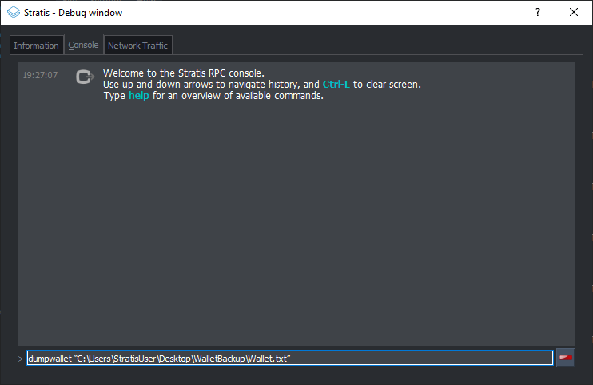
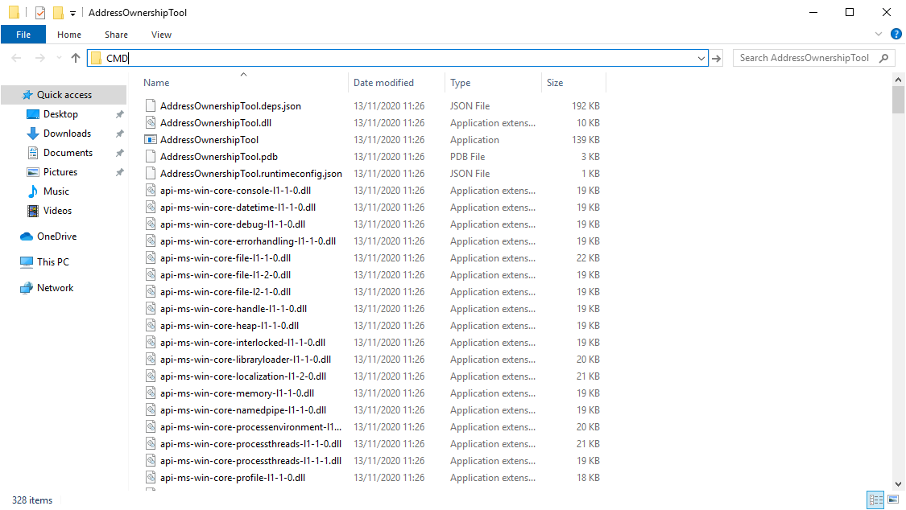

STRAX Token Swap Guide for Windows¶
Step 1 - Obtain STRAX Wallet Address¶
Download and install the STRAX Wallet from https://www.stratisplatform.com/wallets/.
Create a new wallet and ensure you keep a secure record of your mnemonic words and optional passphrase.
Obtain a Receive Address. Keep note of this address as it will be defined later in the process.
{kind=link}
Step 2 - Obtain Address Ownership Tool¶
The AddressOwnerShipTool must be used to prove ownership of funds; please download the relevant package to your device using the release page below.
Extract the contents of the ZIP archive to a safe location on the device where your Stratis Wallet is located.
{kind=link}
There are three wallets that are supported by the AddressOwnershipTool.
Only complete the steps relevant to the wallet software that contains your STRAT Wallet.
Step 3 - StratisX/QT Recovery Process¶
Open StratisX that contains your wallet
{kind=link}
Once loaded; open the console via “Help > Debug Window > Console”
{kind=link}
Enter the below command:
dumpwallet “<filepath>.txt”
Example
{kind=link}
Open CMD or PowerShell and navigate to the location where the AddressOwnershipTool was stored.
The simplest way to achieve this is to open the folder where the tool was stored and type CMD into the navigation bar and hit ENTER. This will open a new instance of CMD in the opened directory

{kind=link}
Now call the AddressOwnershipTool executable with the following command:
AddressOwnershipTool.exe -privkeyfile=“C:\Users\StratisUser\Desktop\WalletBackup\wallet.txt” -destination=**STRAXAddress**
Please replace STRAXAddress with YOUR STRAX Address.
A CSV file will be created in the directory where you launched the AddressOwnershipTool, named the same as your destination STRAX address, containing signatures, signed with your private key for each of the addresses contained within your wallet.
Upload this CSV to STRAX Token Swap Process Form
Step 3 - Stratis Core Recovery Process¶
Open CMD or PowerShell and navigate to the location where the AddressOwnershipTool was stored.
Now call the AddressOwnershipTool executable with the following command:
AddressOwnershipTool.exe -name=StratisCoreWalletName -password=walletPassword -destination=**STRAXAddress**
Please replace the all values with your genuine values relating to your Stratis Wallet; i.e. walletName, walletPassword, STRAXAddress
The AddressOwnerShipTool will now load your wallet and return a line for each discovered address; the ending result will look like the below.
SZ5fg1NkRk1qT3JBpNKopZmea4wgDcA7Hp;XU2jNwiac7XF8rQvSk2bgibmwsNLkkhsHV;IGbJN2tg1GBY3MXf9sGq2sQwGCdLy/CqsuD6CROf6lQrASDASDASWXe/MF8+fPrlNjf2vivTmW7gCcYG4Fk3Tak=
SNR6v9CUxUwDgfkCoAJ1KKennZzeK5hS3D;XU2jNwiac7XF8rQvSk2bgibmwsNLkkhsHV;IM59KY8OtMnlTkdJCdIuGm5FNSDFDSFSDFSDSADASDASDVuO+EANs9hLGK8EqyL+A41/5LnhMIy8xaimLZlddx0=
SWKAjAnBS44SWM9D5GZMNmTbKmYT7Xi7to;XU2jNwiac7XF8rQvSk2bgibmwsNLkkhsHV;H/QB1rHxSMA2qmaX1FycNFeEcP/dPWzBEw2ESyS2S615CasdasdsadOnAutuGh8SVnH2s/bMBCp7RNzl6o9Q/UI=
SRib9v44CpufsrkRjHATb9D4bjdzXuQTrp;XU2jNwiac7XF8rQvSk2bgibmwsNLkkhsHV;IDr81471+aNwYIAVaDGMjigB9AmrM/m0nBasdsadsadasJBJJT/aCRZ9TmJsPpopcT4YgCDph6kVXPlGpjNzOJQ=
SUpWKzs4Rn4CVFrGsBLW9SQzGgUH1g7KPo;XU2jNwiac7XF8rQvSk2bgibmwsNLkkhsHV;IL0GV9SJRmLFMiznalzGsZmDC5uCDFDFDFDFDSFDSFSDF+rcezkpCf22kmvIZXeFVYhAiQOkC2OmDvqkMkyKDj8=
SXSZ4n944Z92iEyVyLiHhowAB5NBdAuYSY;XU2jNwiac7XF8rQvSk2bgibmwsNLkkhsHV;IPFp7KsX4Yig7bOBuInlNImuLX7F5dpHxUMqosI9DFDFDQ86VGa2EBZWwHn31bdP8Qx1qcr5F+8E4PcMEtZu6Nw=
SRBtSj7ENKGDN4UBErrgMxy7yeb6NDDZ1g;XU2jNwiac7XF8rQvSk2bgibmwsNLkkhsHV;H7YO6696eMobss7GESzYgVXUwyYxiasdasdasdsaSDFDDFDH2kFX7uNPNbtMToO73Ozj8f4WXCBBIkbbGYX2Y4s=
SVyj2SH9WUdPzprjXhSj74mHiZx1De5JQ9;XU2jNwiac7XF8rQvSk2bgibmwsNLkkhsHV;IFeetO0oQQ5aiS6t0K0RJvytmsj6U1oPjUQrBasdasdsssvGm687+mE6O0WK3+Jxdx+gwwjwkWoQOJ3oOZrSqyM=
SXnKkjGLgDk1PoeT2pWxK4EH9FQmPVEEGU;XU2jNwiac7XF8rQvSk2bgibmwsNLkkhsHV;II5cb5F9xbw/uU9VNrg+DPgDoHVxLiSdXRjLio+htpH2aasdsadsadasd9e34dzfC46vYPHrXV0wB5cBYWmecw0=
SYgFzZdLP8co96HHdkDQHaJdGfUte7SmvM;XU2jNwiac7XF8rQvSk2bgibmwsNLkkhsHV;HwZJJqJHAdBwXOdWpGYSwrW1DwYgVxQ1cevpVe6z0FjtcMxI8sQrBdfdfdfb+Eb3J/f2d+TyxhfVmFyGk2E/82A=
SV7ZHcqbqRgXy1PkcvAkWxfbAhPCd9hRDs;XU2jNwiac7XF8rQvSk2bgibmwsNLkkhsHV;H3DetX1aczIQuxqmdkoZH+ObIKVo/adasdsadasdsaasdasdasdasdsadasdasd/wyaoSc/7v25XG82lM55x9KM=
A CSV file will be created in the directory where you launched the AddressOwnershipTool, named the same as your destination STRAX address, containing signatures, signed with your private key for each of the addresses contained within your wallet.
Upload this CSV to STRAX Token Swap Process Form
Step 3 - Ledger Wallet Recovery Process¶
Connect your Ledger device to the computer where you have downloaded the AddressOwnerShipTool
https://github.com/stratisproject/StratisBitcoinFullNode/releases/tag/1.2.0.0
Unlock your Ledger device and open the Stratis App on the Ledger Device
Open CMD or PowerShell and navigate to the location where the AddressOwnershipTool was stored.
Now call the AddressOwnershipTool executable with the following command:
AddressOwnershipTool.exe -ledger -destination=**STRAXAddress**
Please replace STRAXAddress with YOUR STRAX Address.
The AddressOwnershipTool will scan used addresses on your Ledger device and sign a message for any addresses found that contain a balance. For each address that contains a balance, you will be prompted to confirm the message signing on the device. This process ensures that the private key never leaves your Ledger device.
A CSV file will be created in the directory where you launched the AddressOwnershipTool, named the same as your destination STRAX address, containing signatures, signed with your private key for each of the addresses contained within your wallet.
Upload this CSV to STRAX Token Swap Process Form